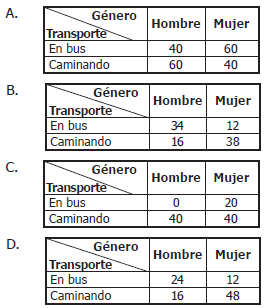
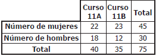
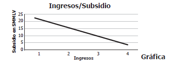
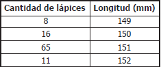
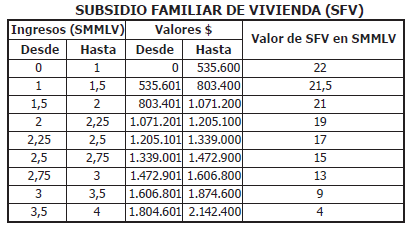
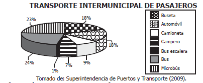

1. En una fábrica se aplica una encuesta
a los empleados para saber el medio de
transporte que usan para llegar al trabajo,
y luego decidir si se implementa un servicio
de ruta. Los resultados mostraron, entre
otras, estas tres conclusiones sobre un
grupo de 100 empleados que viven cerca
de la fábrica y que se desplazan únicamente
en bus o a pie:
* El 60% del grupo son mujeres
* El 20% de las mujeres se desplazan en bus.
* El 40% de los hombres se desplazan caminando.
¿Cuál de las siguientes tablas representa
correctamente la información obtenida de
ese grupo?

Respuestas
A
B
C
D
3. En una institución educativa hay dos
cursos en grado undécimo. El número de
hombres y mujeres de cada curso se relaciona
en la tabla:

La probabilidad de escoger un estudiante de
grado undécimo, de esta institución, que sea
mujer es de 3/5 . Este valor corresponde a la
razón entre el número total de mujeres y
Respuestas
el número total de estudiantes de grado
undécimo.
el número total de hombres de grado
undécimo.
el número total de mujeres del curso 11 B.
el número total de hombres del curso 11 A.
6. Una persona que observa la información de la tabla elabora la gráfica que se presenta a
continuación.

La gráfica presenta una inconsistencia porque
Respuestas
los ingresos y el subsidio correspondientes se dan en miles de pesos, y no en SMMLV.
la correspondencia entre ingresos y subsidios es inversa, pero no disminuye de manera
constante y continua.
faltan algunos valores de los subsidios presentados en la tabla.
los valores del subsidio deben ser ascendentes, pues a menores ingresos, mayor es el subsidio.
7. Una familia con ingresos entre 0 y 1 SMMLV recibe un subsidio equivalente a
Respuestas
1,4 veces el subsidio de una familia de ingresos entre 2 y 2,25 SMMLV.
1,8 veces el subsidio de una familia de ingresos entre 2,5 y 2,75 SMMLV.
3,5 veces el subsidio de una familia de ingresos entre 3 y 3,5 SMMLV.
5,5 veces el subsidio de una familia de ingresos entre 3,5 y 4 SMMLV.
9. Una prueba atlética tiene un récord mundial de 10,49 segundos y un récord olímpico de 10,50
segundos. ¿Es posible que un atleta registre un tiempo, en el mismo tipo de prueba, que rompa
el récord olímpico pero no el mundial?
Respuestas
Sí, porque puede registrar, por ejemplo, un tiempo de 10,497 segundos, que está entre los
dos tiempos récord.
Sí, porque puede registrar un tiempo menor que 10,4 y marcaría un nuevo récord.
No, porque no existe un registro posible entre los dos tiempos récord.
No, porque cualquier registro menor que el récord olímpico va a ser menor que el récord mundial.
2. Una fábrica de lápices que realiza el
control de calidad de sus productos, selecciona
una muestra de 100 lápices. En la siguiente
tabla se registra la longitud de los
mismos:

Con base en la información presentada en la
anterior tabla y teniendo en cuenta que el margen
de error del control de calidad es del 3%,
el porcentaje correspondiente a los lápices producidos
que miden 150 mm está entre
Respuestas
el 8% y el 16%.
el 13% y el 19%.
el 15% y el 18%.
el 16% y el 65%.
4. Un colegio necesita enviar 5 estudiantes como representantes a un foro sobre la contaminación
del medio ambiente. Se decidió que 2 estudiantes sean de grado décimo y 3 de grado undécimo. En
décimo hay 5 estudiantes preparados para el foro y en undécimo hay 4. ¿Cuántos grupos diferentes
pueden formarse para enviar al foro?.
Respuestas
9
14
20
40
Responde estás 5,6,7 con respecto a este enunciado y gráfica
El subsidio familiar de vivienda (SFV) es un aporte que entrega el Estado y que constituye un complemento
del ahorro, para facilitarle la adquisición, construcción o mejoramiento de una solución de vivienda de
interés social al ciudadano. A continuación se presenta la tabla de ingresos en salarios mínimos mensuales
legales vigentes (SMMLV) y el subsidio al que tiene derecho, para cierto año.
SMMLV = Salario Mensual Mínimo Legal Vigente

5. Con el SFV más los ahorros con los que cuente el grupo familiar y el crédito que obtenga de
una entidad financiera, se puede comprar la vivienda. Por tanto, el procedimiento correcto para
estimar el valor del crédito que debe solicitarse al banco es:
Respuestas
Valor del crédito = ingresos + ahorros + subsidio + valor de la Vivienda.
Valor del crédito = valor de la vivienda – ahorros – subsidio.
Valor del crédito = ingresos + ahorros – subsidio + valor de la Vivienda.
Valor del crédito = valor de la vivienda + subsidio – ahorros.
8. A continuación se muestran los resultados de una encuesta que indagó sobre el parque automotor
del transporte intermunicipal en México.

Según la información anterior, es correcto afirmar que
Respuestas
la mayor parte del parque automotor son automóviles, camionetas y camperos.
la mitad del parque automotor corresponde a automóviles, camionetas y camperos.
la mayor parte del parque automotor son buses, microbuses y busetas.
la mitad del parque automotor corresponde a buses, microbuses y busetas.